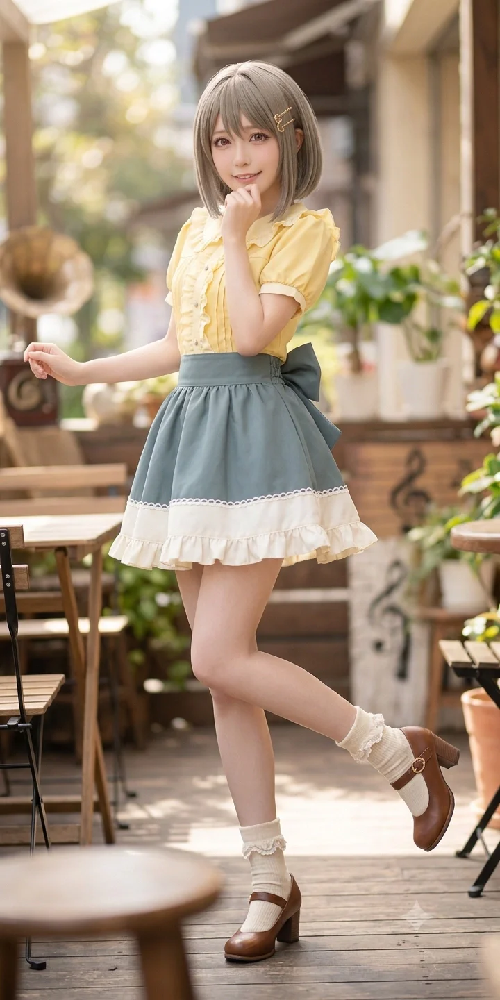

"수미수미가 아니라 수밍이라고! 누가 방금 수미칩이라고 불렀어?! 내 바게트 맛 좀 볼래?!"
효빈대학교 제과제빵학과 재학생. 김시연 사단의 핵심 찐친 그룹 멤버이자, 자타공인 효빈대의 최고 귀염둥이(?)이자 빵순이 포지션을 담당하고 있다.
이름(나수미)에서부터 알 수 있듯 완벽한 나카스 카스미 오시이며, 단순히 좋아하는 것을 넘어 실제 카스미처럼 고등학교 시절 스쿨 아이돌부 부장을 역임했을 정도로 캐릭터에 완벽하게 동기화된 삶을 살고 있다. 타고난 제빵 실력으로 친구들의 미각을 책임지고 있지만, 특유의 어설픈 '하라구로(속이 검음)' 장난과 허당끼 때문에 언제나 역관광을 당하는 미워할 수 없는 캐릭터다.
또한 본의 아니게 자신이 구운 빵으로 친구들의 살을 찌우는 주범(?)이기도 하며, 자신의 오시인 카스미의 성역을 모욕한 혐오 빌런 윤재훈을 극도로 혐오한다. 한편 집에서는 8살 터울의 친언니이자 박효빈 시장·노정미 시의원의 족포초등학교 및 지역아동센터 동창인 나수민(1996년생) 역시 외모부터 성격까지 카스미 판박이인 중증 카스미 오시여서, 자매끼리 매일같이 "누가 더 진정한 카스밍인가"를 두고 피 튀기는 정통성 배틀(...)을 벌이고 있다.
2. 성향 및 특징 (카스미 실사판)
2.1. 초롱초롱한 눈망울과 갈색 머리
외모 역시 원본 캐릭터인 카스미와 소름 돋는 싱크로율을 자랑한다. 원본 캐릭터의 베이지색(또는 애쉬 그레이) 머리칼과 달리 약간 짙은 갈색(초코브라운) 머리카락을 지녔다는 점만 제외하면, 특유의 초롱초롱하고 똘망똘망한 눈망울과 사랑스럽고 귀여운 이목구비까지 나카스 카스미의 현실 강림이라 봐도 무방할 정도로 똑같이 생겼다. 친구들 사이에서는 키가 가장 아담한 편이라 그룹 내에서 귀여움 포지션을 자연스럽게 독차지하고 있다.
2.2. 수미수미가 아니라 수밍이라고! (feat. 수미칩)
그룹 내에서 친구들 중 키가 제일 작고 완벽한 귀염상이다 보니, 본인 스스로도 카스미처럼 귀여움 포지션을 독점하려 든다. 친구들이 장난삼아 "수미수미" 혹은 본명으로 부르면 "수미수미가 아니라 수밍이라고!"라며 발끈하는 것이 일상 패턴이다.
특히 친구들이 자신의 이름을 가지고 장난칠 때 가장 극대노하는데, 그중에서도 최악의 역린은 바로 유명 과자 이름인 '수미칩'이라고 부르는 것이다.[1]본인은 이 별명이 자신의 아이돌(?) 정체성을 무너뜨리는 최악의 모욕이라고 주장한다.
원본 캐릭터인 카스미가 '카스카스'라고 불리는 것을 극도로 혐오하듯, 수미 역시 누군가 "어이~ 수미칩!" 하고 부르면 "수미칩이 아니라 수밍이라고!! 한 번만 더 수미칩이라고 부르면 코페빵에 캡사이신을 듬뿍 짜서 입에 쑤셔 넣어버릴 거야!!"라며 길길이 날뛴다. 본인 피셜, 수미칩은 카스카스와 동급의 심한 욕(?)이라고 한다.
귀여운 외모와 달리 성질이 뻗치면 꽤나 물리적인(?) 해결책을 선호한다. 범죄자에게 카스밍의 정의의 코페빵(물리)을 먹이듯, 말 안 듣는 친구들이나 선을 넘는 진상들에게는 직접 구운 돌덩이처럼 딱딱한 수밍의 바게트(물리)를 먹일지도 모른다며 으름장을 놓곤 한다.
2.3. 어설픈 하라구로와 허당끼
카스미 특유의 어설픈 '하라구로' 장난까지 완벽하게 빼닮았다. 종종 친구들을 골려먹으려고 친구 신발에 몰래 빵 숨기기, 샌드위치에 매운 소스 잔뜩 넣기 등의 치졸한(?) 장난을 기획하지만, 본인의 허술함 탓에 실행하기도 전에 들키거나 본인이 그 매운 샌드위치를 먹게 되는 등 늘 역관광을 당하고 만다.
2.4. 성적은 카스밍을 닮고 싶지 않다(?)
공부를 아예 못하는 편은 아니지만, 브레인들이 즐비한 김시연 찐친 그룹 내에서는 제일 못하는 편에 속한다(...). 대학 전공도 실기로 최대한 쇼부를 볼 수 있는 제과제빵학과를 선택해 공부와 거리가 멀어 보이지만, 누군가 이를 지적하면 발작 버튼이 눌린 듯 뻔뻔하게 항변한다.
"야! 내가 아무리 수밍수밍 거려도, 역사랑 고문(古文) 싫어하고 올 9등급 찍던 카스밍이랑은 근본부터 달라!! 난 적어도 내신 5점대는 유지했다고! 나한테 수학 들이밀지 마!!"
본인 딴에는 나름대로 '공부 못하는 오시'의 프레임에서 벗어나고 싶은 강한 집념(?)을 보여주지만, 친구들이 영어 기출문제나 수학 공식을 들이밀면 똘망똘망하던 눈동자가 지진을 일으키며 슬금슬금 뒷걸음질 치는 모습이 영락없는 카스미 판박이다.
3. 생애 및 학창 시절
3.1. 사능동의 빵순이, 스쿨 아이돌 부장
2004년 3월 21일, 공교롭게도 카스미의 생일(1월 23일)을 일과 월을 뒤집어 놓은 듯한 날짜에 효빈광역시 북구 사능동에서 태어났다.
사능동 일대는 예로부터 제과제빵 명장들이 운영하는 빵집이 많기로 유명한 동네인데, 이런 환경적 요인 덕분인지 카스미의 취미인 제빵 능력을 200% 계승하여 빵을 기가 막히게 잘 굽는다. 그녀가 구운 빵은 실제 카스밍의 코페빵과 견줄 정도로 맛이 뛰어나서 주변 친구들이 입에 달고 살며, 특히 절친 그룹의 고소유가 그녀의 빵을 가장 많이 축내는 VIP 단골이다.
사능초등학교와 효빈중학교를 거치며 김시연과 알게 되었고, 효빈여자고등학교 시절에는 자신의 오시인 카스미를 따라 직접 스쿨 아이돌부 부장을 맡아 교내 행사와 축제를 휩쓸고 다녔다. 이 시절, 원칙주의자 학생회장 유채나와 동아리 예산 및 부실 사용 문제로 애니메이션 1기 뺨치는 살벌한 기싸움을 벌이기도 했다.
3.2. 엘린지역아동센터 시절: 전설의 비주얼 품평과 '두끼' 피딩
북구 사능동 출신으로 집안이 넉넉지 않았던 수미는 인접한 서구의 엘린(엘림)지역아동센터 중등부를 다녔다. 사실 이 센터와 수미네 집안의 인연은 수미의 8살 터울 친언니인 나수민(1996년생)으로부터 시작되었다.
과거 수미네 가족이 서구 쪽의 열악한 연립주택에 살던 시절, 언니 나수민은 효빈시 최악의 마굴로 악명 높던 족포초등학교를 다녔는데, 그곳에서 같은 1996년생 동갑내기이자 다문화·빈곤 가정이라는 아픔을 공유한 박효빈, 그리고 가족돌봄청년(영 케어러)이었던 노정미(현 효빈광역시의원)와 만나 엘린지역아동센터 1세대 원조 멤버로서 서로의 상처를 보듬으며 악착같이 살아남았다. (이후 집안이 북구 사능동으로 이사하면서 8살 어린 동생 수미는 다행히 족포초의 마수를 피해 사능초등학교로 진학할 수 있었다.)
이런 각별한 인연 덕분에, 훗날 15학번 대학생이 된 박효빈이 모교나 다름없는 엘린센터에 멘토 교사로 들어왔을 때 절친 나수민의 친동생인 나수미와 훗날 최연소 효빈광역시의회 시의원이 되는 지민성의 거친 5과목 하드캐리 멘토링을 누구보다 열성적으로 전담하게 된 것이다.
[나수미의 뻔뻔한 비주얼 품평과 공부 파업]
중학교 문제집 여백에 크루아상 낙서만 빼곡히 그리던 수미는, 14시간 쓰리잡 노동에 찌들어 덮수룩한 머리로 파란색 과잠만 입고 다니는 박효빈에게 기습적인 '비주얼 품평' 팩트 폭격을 날려 효빈을 뇌 정지 오게 만들었다. 나수미: "쌤 맨날 그 칙칙한 파란 과잠만 주구장창 입고 다니고 머리도 아저씨처럼 대충 털고 다니잖아요. 솔직히 쌤 이목구비 뜯어보면 눈도 또렷하고 콧대도 있어서, 머리 왁스로 조금 만지고 옷만 깔끔하게 차려입고 꾸미면 길거리에서 여자애들한테 꽤 먹힐 상이거든요? 수밍의 절대 미적 감각을 믿어보라니까요?" 박효빈: "...뭐? 야, 임마. 쌤 비주얼 걱정할 시간에 너나 공부해서 고등학교 갈 걱정해라! 잔말 말고 3번 문제 풀어, 안 풀면 오늘 간식 코페빵 압수다."
공부는 지독하게 안 했지만, 언니의 가장 소중한 절친이자 자신을 허물없이 대해주고 빵에 대한 꿈을 비웃지 않는 효빈을 친오빠처럼 무척이나 잘 따랐다.
중간고사가 끝나면 박효빈이 사비 11만 원을 털어 무한리필 떡볶이 '두끼'와 '설빙'을 코스로 먹여주는 자본주의 피딩 카르텔의 철저한 수혜자였다.
이때 동기인 지민성은 효빈의 밤 11시 인스타 DM 과외 덕분에 사회 과목 40점 수직 상승이라는 기적을 이루며 펑펑 울었지만, 수미는 치즈 떡을 오물거리며 "그래봤자 50점대 후반이면서 두끼 떡볶이 사리 종류나 다 외우지 마라"며 앙칼진 입담을 자랑했다.
훗날 효빈 쌤이 훈련소가 면제되어 군대 대신 사회복무요원으로 복무하며 덮수룩한 아저씨 머리 그대로 배스킨라빈스 아이스크림을 사 들고 찾아왔을 때, 수미는 "헐?! 쌤 머리도 안 깎았잖아요! 민초 빼고 아몬드 봉봉 주세요!!"라며 변함없는 뻔뻔함을 보여주기도 했다.
3.3. 전설의 내신 5점대와 효빈대 피의 고군분투
나수미의 고등학교 내신 성적은 그야말로 처참했다. 브레인 친구들 틈에서 수학과 영어를 던진 대가로 영혼까지 끌어모아 만든 내신 성적이 '5점대 극후반'이었던 것. 본인은 "그래도 올 9등급 찍던 카스미보단 내가 낫지 않냐?"라며 정신 승리를 시전했지만, 효빈대학교라는 지역 최고 명문대에 비비기엔 턱없이 모자란 점수였다.
하지만 효빈대 제과제빵학과는 실기 비중이 압도적으로 높아서 내신이 조금 낮아도 실기 만점으로 뒤집을 수 있는 전형이 있었다. 수미는 자신의 부족한 내신을 커버하기 위해 양팔에 오븐 화상을 입어가며 하루에 빵을 수백 개씩 구워내고 망친 빵을 엎어버리는 피나는 고군분투를 거듭했다. 수능특강 대신 제빵기능사 실기 책을 너덜너덜해질 때까지 팠고, 결국 예비 번호의 끝자락에서 '추추추추추추가합격'이라는 문 닫고 들어가는 기적을 이뤄냈다. 현재는 당당한 효빈대생이자, 학과 실습실과 외부 빵집 아르바이트를 오가며 진정한 빵 전문가의 길을 걷고 있다.
3.4. 언니 나수민과의 '진(眞) 카스밍' 정통성 전쟁
나수미의 집안에는 8살 위의 친언니인 나수민(1996년생)이 있다. 놀랍게도 필리핀계 어머니의 우월한 유전자가 자매에게 데칼코마니처럼 똑같이 발현된 덕에, 언니 나수민 역시 짙은 갈색 머리와 초롱초롱한 눈망울, 작은 키까지 나카스 카스미와 소름 돋게 똑같이 생겼다! 심지어 자매가 나란히 중증 카스미 오시여서, 사능동 본가에서는 매일같이 "누가 더 카스미를 사랑하는가", "누가 더 진짜 카스밍에 가까운가"를 두고 세계관 최강의 동족상잔(?) 미러전이 펼쳐진다.
[1세대 원조 수밍(96년생) vs 2세대 현역 수밍(04년생)의 광기 어린 설전] 나수민 (언니, 96년생): "야, 이 짭수밍(나수미)아! 어디서 감히 정통성을 논해? 난 니지동 프로젝트가 처음 발표됐을 때부터 내 월급을 굿즈에 갈아 넣은 성골 중의 성골 오시거든?! 그리고 이름도 봐라! 카스'미'보다 내 이름 '수민(Su-min)'이 '카스밍(Kasumin)' 발음이랑 100배는 더 똑같거든?! 넌 그냥 내 아류작인 '수미칩 2호기'일 뿐이야!" 나수미 (동생, 04년생): "하?! 언니야말로 양심 어디 갔어?! 카스밍은 파릇파릇한 스쿨 아이돌이지, 언니처럼 서른 줄 바라보는 직장인이 아니거든?! 난 실제로 효빈여고 스쿨 아이돌부 부장까지 했고, 결정적으로 카스밍처럼 빵도 기가 막히게 잘 굽잖아! 오븐 만졌다가 부엌 태워 먹을 뻔한 요리치 언니가 어디서 '원조 수밍' 타령이야, 이 늙은 수민칩아!!" 남동생 (유일한 정상인): "...제발 둘 다 조용히 좀 해... 저 똑같이 생긴 노란색 도플갱어들 때문에 집안이 미쳐 돌아가네 진짜..."
가장 골 때리는 점은 이 둘의 싸움에 박효빈 시장과 노정미 시의원이 시도 때도 없이 심판으로 강제 소환된다는 것이다. 언니 나수민은 박효빈, 노정미와 1996년생 동갑내기로, 어린 시절 족포초등학교의 지옥 같은 학폭을 함께 견뎌내고 엘린지역아동센터에서 같이 떡볶이를 나눠 먹으며 자란 '지아센 1세대 생사고락 찐친'이다. 수미가 박효빈에게 깍듯하면서도 앙큼하게 "효빈 쌤~♡"이라고 부르는 반면, 언니 수민은 시장실 문을 벌컥 열고 들어가 "야, 효빈아! 너 솔직히 말해봐, 카스밍 최애인 네가 보기에 내가 더 카스밍 같냐, 저 짭수미가 더 카스밍 같냐?!"라며 동갑내기 특유의 거침없는 압박 면접을 시전한다. (단, 아무리 화가 나거나 격의 없이 부를 때도 족포초 시절 일진들이 쓰던 호칭인 '야 박효빈'은 절대 쓰지 않고 반드시 성을 떼고 "야, 효빈아"라고만 부른다.)
똑같은 얼굴을 한 카스미 실사판 자매가 양옆에서 똘망똘망한 눈으로 레이저를 쏘아대면, 박효빈 시장은 "아 제발... 수민아, 수미야, 둘 다 똑같이 생겼고 둘 다 똑같이 시끄러우니까 내 시장실에서 나가서 싸워라..."라며 두통약을 찾고, 마침 시장실에 들렀던 동갑내기 절친 노정미 시의원은 "우치(우리) 눈에는 수민이나 수미 쨩이나 둘 다 귀여운 카스밍 도플갱어데이~ 싸우지 말고 언니한테 와시와시나 받자!"라며 양손으로 자매를 동시에 주물럭거려 상황을 강제 종료시킨다고 한다.[2]언니 수민이 '성인의 자본력(한정판 블루레이·굿즈 풀세트 영수증)'으로 동생의 기를 죽이면, 동생 수미는 '전공자의 제빵력(갓 구운 수제 콧페빵)'으로 카운터를 날리는 창과 방패의 대결이 365일 이어진다.
나수민 (친언니 / 1996년생 / 세계관 최강의 '카스밍 미러전' 숙적이자 박효빈·노정미의 족포초·지아센 동기): 8살 터울의 친언니. 자매가 나란히 나카스 카스미 실사판 외모와 앙큼한 텐션을 탑재한 것도 모자라 둘 다 중증 카스미 오시여서, 집안에서는 하루도 조용할 날이 없다. 서로를 '짭수밍', '수미칩 vs 수민칩'이라 부르며 으르렁대지만, 누군가 밖에서 동생이나 친구들(박효빈, 노정미), 혹은 카스미를 욕하면 자매가 쌍으로 눈이 뒤집혀 달려드는 무서운 핏줄이다.
"야 박효빈" 금지령과 다정한 호칭 "야, 효빈아": 언니 나수민은 박효빈 시장과 같은 1996년생 동갑내기로, 어린 시절 최악의 마굴이었던 족포초등학교와 엘린지역아동센터를 함께 다닌 소꿉친구다. 당시 족포초에서 윤재훈과 이인성 일당이 효빈을 괴롭히고 조리돌림할 때마다 "야 박효빈!"이라고 성을 붙여 거칠게 불렀던 끔찍한 기억이 있었고, 같은 필리핀 다문화 가정 아이로서 그 아픔을 누구보다 뼈저리게 알고 있던 수민은 어릴 적부터 절대 성을 붙여 부르지 않고 늘 다정하고 털털하게 "야, 효빈아" 혹은 "효빈아"라고만 불렀다.
한번은 중학생 시절의 철없던 수미가 언니의 말투를 어설프게 따라 한다며 장난삼아 "야 박효빈 쌤~"이라고 불렀다가, 평소에 화를 잘 안 내던 언니 수민에게 정색하며 등짝을 맞은 적이 있다. 당시 수민은 "수미야, 언니 친구한테 장난이라도 성 붙여서 '야 박효빈'이라고 부르지 마. 그거 옛날에 족포초 쓰레기들이 효빈이 괴롭힐 때 쓰던 말이란 말이야. 너한테는 세상에서 제일 고마운 은인이니까 평생 깍듯하게 '효빈 쌤'이라고 불러, 알았어?"라며 진지하게 타일렀고, 그 내막을 알게 된 수미 역시 큰 충격을 받아 그날 이후 아무리 앙큼하게 툴툴거릴지언정 호칭만큼은 무조건 애정이 듬뿍 담긴 "효빈 쌤!", "우리 쌤!"으로 고정하게 되었다.
96년생 족포초·지아센 삼총사 (박효빈·노정미·나수민)와 '더블 와시와시' 제압기: 언니 수민은 제10대 효빈광역시의원인 노정미(1996년생, 토죠 노조미 평행이론)와도 족포초등학교 및 지역아동센터 동기이자 둘도 없는 절친이다. 어린 시절 '돼조미'라 놀림받던 정미와 '다문화 바이러스'라 놀림받던 효빈, 수민 셋이서 센터 구석에 모여 서로를 위로하며 자랐기 때문에 유대감이 가족 이상으로 끈끈하다.
문제는 160cm에 압도적인 피지컬(B91)을 자랑하는 임상심리사 노정미 앞에서 150cm대 초반의 아담한 카스미 자매(수민·수미)가 "내가 진짜 카스밍이다!"라며 짹짹거리며 싸울 때다. 정미 언니가 생긋 웃으며 "어머~ 똑같이 생긴 귀여운 카스밍이 두 명이나 있네? 우치(우리)가 임상심리학적으로 누가 더 카스밍 같은지 직접 확인해 볼까나~?"라며 타로 카드를 집어 넣고 양손에 스피리추얼 파워를 담아 달려들면, 기세등등하던 언니 수민과 동생 수미는 동시에 비명을 지르며 포위당해 '자매 동시 와시와시(주물럭)'를 당하고 나란히 쭈구리가 되어 평화 협정을 맺는다고 한다.
중수역 등신대 '더블 카스밍' 센터 쟁탈전: 주말에 자매가 나란히 노란색 카디건을 맞춰 입고 중수동(골든 로드) 중수역에 설치된 카스미 등신대 앞에 갔다가, 서로 등신대 바로 옆 '정중앙 센터 자리'에서 사진을 찍겠다며 어깨빵 기싸움을 벌였다. 똑같이 생긴 귀여운 자매 두 명이 등신대 양옆에 딱 붙어서 "내가 진짜 수밍이야! 넌 비켜!"라며 짹짹거리는 진풍경이 펼쳐졌고, 지나가던 효빈시 오타쿠들과 시민들이 "헐, 카스밍이 분신술 썼다!!", "도플갱어 이벤트냐?!"라며 구경꾼이 몰려드는 바람에 자매가 동시에 얼굴이 시뻘게져서 도망쳤다고 한다.
한정판 네소베리 인질극과 '수민칩'의 역습: 수미가 언니 방에 있던 '한정판 점보 카스미 네소베리'를 몰래 자기 방 침대로 납치해 왔다가 언니에게 딱 걸렸다. 극대노한 언니 수민은 제빵 실습 과제용으로 수미가 식탁에 고이 모셔둔 최고급 프랑스산 고메 버터를 들고 베란다 창문을 열며 "야 수미칩! 3초 안에 내 카스밍 네소베리 안 돌려놓으면 네 실습용 버터 밖으로 투척한다?!"라고 협박했고, 수미 역시 네소베리의 양팔을 붙잡고 "한 번만 더 수미칩이라고 부르면 언니 네소베리 리본을 코페빵 모양으로 묶어버릴 거야 이 수민칩아!!"라며 팽팽한 인질극을 벌였다. 결국 외출 후 돌아온 어머니의 등짝 스매싱 연타로 사태가 진압되었다.
콧페빵 정통성 논쟁 (제빵 전공생 vs 야매 연성술사): 카스미의 생일(1월 23일)만 되면 자매는 각자 '카스밍 생일 제단'에 바칠 콧페빵을 굽는다. 제과제빵학과 전공생인 수미가 황금빛 크러스트와 완벽한 발효를 자랑하는 최고급 콧페빵을 구워내면, 손재주가 똥손인 언니 수민은 어떻게든 동생을 이겨보겠다고 식용 색소와 스프링클을 괴랄하게 때려 부은 '연성 실패작(?)'을 만들어 온다. 수미가 "언니, 그건 코페빵이 아니라 유채나 표 독요리잖아! 카스밍에 대한 모독이야!"라고 경악하면, 수민은 "닥쳐! 원래 카스밍도 가끔 매운 와사비 빵 만들거든?! 이게 진짜 하라구로 고증이야!"라며 우기는 환장의 자매 배틀이 매년 반복된다.
지민성 (앙숙 티키타카 콤비이자 엘린센터 오빠): 중등부 지아센 시절 박효빈 멘토 밑에서 동문수학한 1살 오빠. 나수미가 내신 5점대로 효빈대 제과제빵과를 뚫은 '실기 만렙'인 반면, 지민성은 내신을 완벽히 회복하지 못해 사립대(평안명대)에 진학했다. 나수미가 "어유, 지민성 저 오빠는 그때 사회 40점 올랐다고 떡볶이만 퍼먹고 있었지"라며 깐족거리면, 지민성은 "그래도 내가 너보다 먼저 시의원 배지 달았거든? 넌 빵이나 마저 구워라"라며 가볍게 카운터를 치는 환장의 티키타카를 보여준다.
박효빈 (영원한 멘토이자 언니의 족포초·지아센 동갑내기 절친, 그리고 덕질 대상의 본체(?) 대리인): 언니 나수민의 1996년생 족포초·엘린센터 동갑내기 절친이자, 수미 본인의 중학교 시절을 구원해 준 영원한 멘토 쌤. 효빈 쌤이 시장이 된 현재, 수미는(언니 수민과 더불어) 자신이 좋아하는 카스미와 똑같은 모습으로 자라 효빈 쌤을 당황하게 만드는 귀여운 빌런이다. 시장실에 난입해 "효빈 쌤! 쌤 최애 카스밍이랑 판박이인 제가 왔는데 빵 안 사줘요?!"라고 앙큼하게 도발하고, 옆에서 언니 수민까지 "야, 효빈아! 내 동생 말고 원조 카스밍인 나한테 먼저 사줘야지!"라며 합세하면, 박효빈은 '내 최애캐와 닮은 건 맞지만, 이 녀석들은 내 족포초 동창 나수민과 중딩 때 수학 안 풀고 도망 다니던 빵순이 나수미다'라며 필사적으로 공과 사(?)를 구분하기 위해 이마를 짚는다. 속으로는 '언니나 동생이나 진짜 소름 돋게 똑같이 컸네'라며 내적 팬심을 간신히 억누른다고.
노정미 (언니 나수민의 96년생 족포초·지아센 단짝이자 스피리추얼 큰언니): 언니 나수민, 박효빈 시장과 함께 족포초등학교와 엘린지역아동센터에서 생사고락을 함께한 1996년생 언니이자 현 제10대 효빈광역시의원. 어릴 적부터 수민 언니를 따라 노정미와 자주 어울렸기에 수미 역시 정미 언니를 친언니처럼 잘 따른다. 다만 수미가 언니 수민과 '누가 진짜 카스밍인가'를 두고 싸우거나 앙큼한 하라구로 장난을 치려 할 때마다, 심리학 석사인 정미 언니가 0.1초 만에 수미의 얕은 수를 간파하고 "우리 수미 쨩, 거짓말하면 스피리추얼 파워로 와시와시 해버린다~?"라며 다가오기 때문에 김시연과는 또 다른 의미로 수미가 꼼짝 못 하는 천적이다. 대신 정미 언니가 가장 좋아하는 야키니쿠(고기) 파티를 열 때마다 수미를 꼭 불러서 챙겨주며, 수미 역시 정미 언니의 시의원 의정 활동 때 수제 마들렌 조공 박스를 가장 먼저 바치는 훈훈한 사이다.
은현성 (안드로이드 팩트폭격기 vs 짝사랑의 흑역사와 찐친의 경계): 뼛속까지 이과생이자 철저한 논리를 중시하는 은현성과, 감정과 허당끼가 지배하는 수미는 환장의 티키타카를 자랑한다. 사실 수미는 과거 현성의 빼어난 미모(...)에 반해 남몰래 풋풋한 연심을 품은 적이 있었다. 하지만 수미의 서툰 플러팅에 현성이 안드로이드처럼 반응하고, 결정적으로 시연의 '죽은 눈'에 쫄아버리면서 결국 노선을 틀었다. 지금도 가끔 현성의 잘생긴 얼굴을 보면 '성격만 아니면 참 좋은데...'라며 복잡미묘하게 끌리곤 하는 애증의 찐친이다.
안드로이드식 철벽 방어 사건: 수미가 용기를 내어 발렌타인데이에 직접 구운 초콜릿 마들렌을 현성에게 수줍게 건네며 "현성아, 이거... 너 주려고 특별히 만든 거야"라며 은근슬쩍 플러팅을 시도했다. 하지만 현성은 1초의 망설임도 없이 "초콜릿의 템퍼링 온도가 1도 정도 어긋나서 표면 광택이 부족하네. 카카오버터의 결정화가 완벽하지 않아. 그래도 당분 보충용으론 나쁘지 않겠군"이라며 안드로이드 같은 평가표만 줄줄 늘어놓았다. 수미는 와장창 깨지는 하트 소리와 함께 억울함에 뒷목을 잡았다.
시연의 얀데레 레이저와 눈물의 포기: 현성에게 어떻게든 어필해보려고 은근슬쩍 팔짱을 끼며 스킨십을 시도하려던 찰나, 저 멀리서 김시연이 눈의 하이라이트가 완전히 꺼진 채로 수미를 뚫어져라 노려보고 있는 것을 발견했다. 마치 "우리 소유 쨩도 모자라서 현성이까지 건드려? 네 척추를 바게트처럼 부러뜨려줄까? ^^"라고 말하는 듯한 무시무시한 살기에 완전히 쫄아버린 수미는 찔끔 눈물을 흘리며 현성에게서 광속으로 떨어졌다. 이 사건 이후 수미는 생존을 위해 현성을 철저한 '찐친'으로만 대하게 되었다.
엑스칼리버 모스 경도 테스트와 미남의 역설: 수미가 말라비틀어져 돌덩이가 된 '엑스칼리버 바게트'를 무기 삼아 휘두르려 하자, 현성은 대뜸 광물 경도계를 가져와 진지하게 내구도 테스트를 진행했다. "이거 모스 경도 6.5는 나오겠는데? 이 정도면 정당방위가 아니라 특수폭행이야."라고 진지하게 경고했다. 수미는 팩폭에 쫄아서 바게트를 내려놓으면서도, 안경을 치켜올리며 광물 분석에 푹 빠진 현성의 턱선과 콧날이 너무 잘생겨서 혼자 속으로 '아오, 저 얼굴만 아니었어도 빵으로 확 치는 건데!! 왜 이렇게 잘생기고 난리야!'라며 복잡한 분통을 터뜨렸다고 한다.
고소유 (유우 오시이자 최대 주주): 수미가 구워온 빵의 최대 소비자이자 진정한 빵 처리반. 수미의 제빵 스킬을 가장 순수하게 사랑하며, 수미가 신작 빵을 가져오면 제일 먼저 입을 벌리고 기다리는 맹목적인 추종자(?)다.
전설의 7kg 살크업 사태: 수미가 실기 연습을 위해 하루에 50개씩 찍어낸 빵을 처치 곤란해하자, 소유가 "수미 빵 너무 두근거려!"라며 매일매일 주워 먹었다. 그 결과 두 달 만에 무려 7kg이 찌는 대참사가 발생했고, 소유는 피눈물을 흘리며 육상 트랙을 뛰어야 했다. 수미는 묘한 죄책감에 그 뒤로 소유 한정 저칼로리 통밀빵을 굽게 되었다고 한다.
매운맛 룰렛 역관광: 수미가 특유의 하라구로 기질을 발휘해 캡사이신을 듬뿍 넣은 지뢰 코페빵을 정상 빵 사이에 섞어 소유에게 먹이는 장난을 쳤다. 그러나 소유 특유의 사기적인 럭키 스탯이 발동하여 소유는 정상 빵만 연속으로 골라 먹었고, 결국 마지막 남은 빵을 의심 없이 베어 문 수미 본인이 지뢰를 밟고 화장실에서 눈물 콧물을 쏟아내는 완벽한 역관광 엔딩을 맞았다.
무자각 플러팅 방어전: 실습실에서 수미의 뺨에 밀가루가 묻자, 소유가 다가와 뺨을 부드럽게 닦아주며 "수미는 빵 구울 때 집중하는 모습이 우주에서 제일 귀여워!"라고 특유의 천연 무자각 플러팅을 시전했다. 수미는 얼굴이 토마토처럼 폭발할 듯 달아올랐고, 부끄러움을 감추기 위해 "수...수미칩이라고 부르지 마 바보야!!"라며 아무 말 대잔치를 벌이며 실습실을 도망쳐 나왔다.
김시연 (아유무 오시이자 무자비한 빽): 내성중, 효빈여고 시절부터 함께한 든든한 빽이자 가장 피해야 할 공포의 대상. 시연은 수미의 허당끼와 행동력을 정치적으로 유용하게(?) 써먹으며, 수미는 시연의 무거운 사랑과 권력 앞에서 완벽한 순종 모드를 유지한다.
유세 차량 하드캐리: 2025년 사회과학대학 학생회장 선거 당시, 시연은 수미를 유세 차량에 강제로(?) 올렸다. 수미는 노란색 치어리더 복장을 입고 부끄러워하면서도 막상 음악이 나오자 미친 텐션의 치어리딩 안무를 선보이며 유세 현장을 아이돌 콘서트장으로 만들어버렸다. 시연은 뒤에서 섬뜩하게 웃으며 "우리 귀여운 수미를 이렇게 굴릴 수 있는 건 나뿐이야"라며 중얼거렸다.
'수미칩' 모욕자 색출 및 사회적 매장: 타 학과의 질 나쁜 복학생 무리가 지나가는 수미를 향해 "어이 수미칩! 빵이나 하나 구워와라!"라며 조롱했다. 이를 목격한 시연은 생긋 웃으며 다가가 그 남학생들의 학사 경고 이력, 족보 부정행위, 전 여친 양다리 전적을 그 자리에서 줄줄 읊어버리며 반 죽음 상태로 만들었다. 수미는 감동하면서도 시연의 미친 정보력에 덜덜 떨며 복종을 맹세했다.
정실 대전의 새우등 터짐: 시연과 소유가 소파에서 꽁냥대고 있을 때, 눈치 없는 수미가 "나도 소유 쨩 무릎베개 해줘!"라며 난입했다. 그 순간 시연의 눈에서 하이라이트가 완전히 꺼지며 척추를 접어버리겠다는 듯한 안광 레이저가 발사되었고, 수미는 들고 있던 바게트를 떨어뜨린 채 그대로 뒷걸음질 쳐 3일 동안 학생회실 근처에 얼씬도 하지 못했다.
오이슬 (시즈쿠 오시이자 앙숙): 러브라이브 공식 커플링인 '시즈카스' 조합의 완벽한 현실판. 고상하고 우아한 척하는 이슬의 속을 수미가 박박 긁어놓고, 분노한 이슬이 팩트 폭격이나 소주병(물리) 물리력을 행사해 수미를 쭈구리로 만드는 환상의 티키타카 콤비다.
연기 발성 vs 하라구로: 수미가 이슬을 놀래키려고 이슬의 에코백에 피망(이슬의 극혐 채소)을 몰래 잔뜩 넣어두었다. 이를 발견한 이슬은 당황하기는커녕 연극부 특유의 완벽한 복식 호흡과 비련의 여주인공 톤으로 "어찌하여 하늘은 나에게 이런 시련을 주시는가!!"라며 광장 한가운데서 명연기를 펼쳤고, 지나가던 사람들이 수미를 천하의 쓰레기 보듯 쳐다보아 수미가 무릎을 꿇고 사과해야 했다.
소맥과 코페빵의 신성모독: 이슬이 연극 연습 중 스트레스를 받아 술에 거나하게 취한 날, "수미의 코페빵엔 역시 참이슬이 제일 잘 어울려!"라며 갓 구운 빵을 소주잔에 푹 찍어 먹는 끔찍한 괴식을 선보였다. 제빵인으로서의 긍지가 짓밟힌 수미는 분노하여 엑스칼리버 바게트를 치켜들었고, 이슬은 빈 소주병을 거꾸로 쥐고 맞서는 전설의 자존심 대결이 벌어졌다.
조창렬 사태의 '병과 빵의 처형 콤비': 고노애 권력형 성범죄 사태 당시, 분노한 이슬이 진짜로 소주병 밑동을 깨고 가해자에게 달려들려 하자 수미가 "이슬아, 그런 더러운 피는 네 손에 묻히는 게 아니야! 내 바게트가 나설 차례다!"라며 양동 작전을 펼쳤다. 물론 주성우가 온몸으로 막아서며 무산되었지만 위기 상황에서만큼은 무시무시한 전투력을 자랑하는 영혼의 파트너임을 증명했다.
유채나 (세츠나 오시이자 독요리 대적자): 과거 고등학교 스쿨 아이돌부 시절부터 동아리 예산을 두고 피 터지게 싸우던 앙숙이자 '세츠카스'의 현실판이다. 깐깐한 원리원칙주의자인 채나와 감정에 충실한 수미는 물과 기름 같지만, 결정적인 순간에는 서로를 가장 잘 이해하는 찐친이다.
보라색 독가스 저지 결사대: 채나가 학생회 엠티에서 요리를 하겠다며 주방에 들어가 정체불명의 보라색 액체(독요리)를 연성하며 유독가스를 뿜어냈다. 모두가 도망칠 때, 수미는 마스크를 3겹으로 겹쳐 쓴 채 방독면을 자처하고 뛰어들어가 엑스칼리버(바게트)로 가스레인지 불을 강제로 끄고 채나를 질질 끌고 나왔다. 이날 이후 수미의 주도로 채나의 주방 영구 출입 금지령이 선포되었다.
학생회 예산 삭감 방어전: 고등학교 시절, 학생회장 채나가 스쿨 아이돌부 예산을 대폭 삭감하겠다고 통보했다. 수미는 이에 굴하지 않고 학생회실 한가운데 드러누워 "예산 안 주면 여기서 한 발짝도 안 움직이고 숨도 안 쉴 거야!"라며 초등학생 수준의 시위를 벌였다. 결국 핏대가 선 채나가 안경을 벗고 한숨을 푹 쉬며 삭감안을 철회해 주며 수미의 승리로 끝났다.
스칼렛 스톰 강제 탑승기: 채나가 길 건너편에 지나가는 자신의 최애 버스(오렌지/레드 도색 급행)를 보고 이성을 잃고 질주할 때, 수미가 그 폭발적인 스피드에 팔을 잡힌 채 휩쓸려 반강제로 버스에 끌려탔다. 수미는 영문도 모른 채 2시간 동안 버스 맨 뒷자리에서 효빈시를 완주하며 채나의 광기 어린 대중교통 오타쿠 토크를 고문당하듯 들어야 했다.
주성우 (불쌍한 펫(?)이자 영원한 전우): 썩어빠진 주민우 일가에서 태어났음에도 유일하게 사람 구실을 하는 기적의 돌연변이 남사친. 수미는 막장 부모를 피해 자립한 성우의 처지를 누구보다 잘 알기에, 특유의 츤데레 화법으로 성우의 밥을 가장 살뜰히 챙겨주는 엄마(?) 같은 역할을 한다.
눈물 젖은 생존 샌드위치: 성우가 집안의 학대로 며칠을 굶다시피 하고 퀭한 눈으로 나타난 날, 수미는 "이거 빵 굽다가 모양 망쳐서 어차피 쓰레기통에 버릴 거니까 착각하지 마!"라며 툴툴거리면서도 가장 좋은 베이컨과 계란이 듬뿍 들어간 특제 샌드위치를 성우의 손에 억지로 쥐여주었다. 성우는 뒤돌아서서 샌드위치를 먹으며 펑펑 울었다고 한다.
억지 나쁜 놈 코스프레 타파: 중학교 시절, 성우가 아빠의 패악질로부터 친구들을 지키기 위해 일부러 모질게 굴며 멀어지려 했다. 그때 수미가 냅다 딱딱한 코페빵을 성우의 뒤통수에 명중시키며 "이 바보 멍청아! 혼자 다 짊어지려고 폼 잡지 마! 네가 아무리 도망쳐도 우린 안 떨어질 거니까!"라고 일갈하여 성우의 억지 코스프레를 완벽하게 박살 내버렸다.
빵집 진상 퇴치 협공: 수미가 일하는 빵집에 진상 손님이 찾아와 "빵에서 이상한 냄새가 난다"며 수미를 윽박지르고 환불을 요구했다. 마침 놀러 왔던 성우가 안경을 치켜올리며 알바생인 척 난입해, "식품위생법 제4조 및 소비자 기본법에 의거하여 악의적 블랙컨슈머 행위 시 업무방해죄로 즉각 경찰에 인계하겠습니다"라고 속사포로 팩트를 꽂아 넣어 진상을 쫓아냈다. 감동한 수미는 그날 남은 팔 안 팔린 케이크를 통째로 성우에게 하사했다.
강하애 (아이 오시이자 지옥의 스파르타 교관): 지독한 천적이자 수미의 멘탈을 가장 잘 터는 인싸 브레인. 수미가 장난을 칠 때마다 하애는 한 수 앞을 내다보고 역관광을 시전하며, 쉴 새 없는 아재개그 폭격으로 수미를 미치게 만든다. 하지만 결정적인 순간엔 든든한 피지컬로 수미를 지킨다.
전원 코드 인질극: 전공 시험 기간, 공부하기 싫었던 수미가 "빵집 알바 가야 해!"라며 뻔뻔하게 귀여운 척 도주를 시도했다. 그러나 하애는 한 치의 망설임 없이 제과제빵 실습실 오븐의 전원 코드를 뽑아 흔들며 "방금 네가 넣은 마들렌 발효 타이머 끝날 때까지 다 못 외우면 오븐 전원 안 꽂아준다? ^^"라고 협박했다. 수미는 닭똥 같은 눈물을 흘리며 그 자리에서 꼼짝없이 5단원을 다 외워야 했다.
밀가루 팩 카운터: 하애가 수미 뒤에 바짝 붙어 "수미야, 바게트가 웃으면 뭔지 알아? 빵 터짐! 꺄하하핫!!"이라며 지독한 다쟈레를 시전했다. 평소라면 귀를 막고 괴로워했을 수미지만, 그날따라 빵이 안 부풀어 예민했던 수미는 말없이 뒤를 돌아 하애의 얼굴 정면을 향해 강력분 밀가루 1kg을 그대로 쏟아부어 완벽한 물리적 카운터를 날렸다.
소개팅남 악력 참교육: 수미가 나갔던 과팅에서, 한 쓰레기 같은 소개팅남이 수미의 제빵 전공을 무시하며 은근슬쩍 성희롱성 발언을 일삼았다. 연락을 받고 몰래 잠입해 있던 하애가 앞치마를 두른 전집 이모 포스로 나타나, 남자의 어깨를 꽉 쥔 채 "우리 수미가 만만해 보이니? 네 팔목 뼈를 빈대떡처럼 부쳐줄까?"라며 괴력의 악력으로 손목을 꺾어버려 남자를 도망치게 만들었다.
고노애 (카나타 오시이자 수미의 아픈 손가락): 수미가 겉으로는 투덜대면서도 속으로는 가장 끔찍하게 챙기는 룸메이트 포지션의 친구. 쓰리잡과 가난에 치여 항상 잠이 부족한 노애를 위해 수미는 츤데레의 정석을 보여주며 묵묵히 지원군이 되어 준다.
한입거리 수면 샌드위치 셔틀: 노애가 알바에 지쳐 학생회실 소파에 쓰러져 잘 때면, 수미는 냄새가 나지 않고 씹기 편한 '한입거리 특제 미니 샌드위치'를 만들어 몰래 노애의 입가에 놔두거나 직접 입에 쏙쏙 넣어준다. 놀랍게도 노애는 눈을 감고 잠든 상태에서도 햄스터처럼 그걸 웅냠냠 다 씹어 먹는 기적의 수면 식사를 보여준다.
섭식장애 극복용 특제 저칼로리 빵: 노애가 과거 빈곤형 비만과 폭식증으로 인한 섭식장애 강박에 시달리며 화장실에서 토할 때, 이를 알게 된 수미는 며칠 밤을 새워 밀가루를 일절 쓰지 않고 아몬드 가루와 스테비아만으로 빵을 만들어 냈다. "이건 100개를 먹어도 살 안 찌는 수미표 마법의 빵이니까 맘 놓고 먹어!"라며 건네주었고, 노애는 빵을 끌어안고 대성통곡하며 섭식장애를 이겨낼 용기를 얻었다.
고하루 기강 잡기 대작전: 노애의 동생 고하루가 언니를 호구로 알고 대들며 반찬 투정을 하던 날, 참다못한 수미가 엑스칼리버(돌바게트)를 쥐고 현관문을 박차고 들어갔다. 수미는 하루의 정수리를 바게트로 가볍게 통통 치며 "언니가 피 땀 흘려 벌어온 돈으로 반찬 투정을 해?! 넌 이 돌빵으로 이빨이 다 부러져봐야 정신 차릴래?!"라며 기강을 완벽하게 잡아놓았다. 뒤에서 지켜보던 노애는 말리기는커녕 흐뭇하게 팝콘을 먹었다.
6. 여담

[나수미 코스프레 사진]
나카스 카스미 특유의 깜찍함과 앙큼함을 완벽 재현! 나수미는 카스밍 그 자체가 되어 완벽한 표정 연기를 선보이며 본인의 덕력을 가감 없이 뽐냈다.
어머니가 필리핀 출신이다. 서구적이고 이국적인 이목구비와 특유의 짙은 갈색 머리카락, 그리고 유난히 크고 초롱초롱한 눈망울은 어머니의 유전자를 강하게 물려받은 덕분이다. 공교롭게도 자신이 그토록 따르는 멘토 박효빈 시장 역시 어머니가 필리핀 출신이고, 친언니 나수민은 박효빈 시장 및 노정미 시의원과 족포초등학교·엘린지역아동센터 96년생 동갑내기 동기여서 두 집안은 어릴 적부터 남모를 끈끈한 유대감과 공감대를 형성하며 서로를 각별하게 챙겼다. 명절이나 기념일이 되면 어머니가 직접 만든 필리핀 전통 디저트나 요리를 언니 수민과 함께 박효빈 쌤에게 싸다 주기도 한다고.
효빈광역시 북구 중수동에 위치한 대형 쇼핑몰인 'HJ몰'을 광적으로 좋아한다. 주말만 되면 HJ몰 베이커리 코너나 디저트 팝업 스토어를 순회하며 영감을 얻는다고 한다. 현재는 그곳에서 알바를 하며 아예 성지에 뼈를 묻었다.
러브라이브 외에 BanG Dream!(뱅드림) 프랜차이즈도 상당히 좋아하는데, 가장 좋아하는 최애 캐릭터는 야마부키 사아야와 아오바 모카다.
그 이유가 상당히 수미다운데, 1. 둘 다 이미지 컬러가 노란색 계열이라서(?), 2. 사아야네 빵집(야마부키 베이커리) 빵이 너무 맛있어 보여서(...), 3. 모카가 카스밍이랑 묘하게 비슷하게 킹받으면서 귀여워서(...)라고 한다.[3]본인은 모카의 느릿하고 능글맞은 성격은 안 닮았다고 주장하지만, 빵에 집착하는 모습은 모카 판박이다.
자신이 만든 빵에 대한 자부심이 하늘을 찌른다. 누군가 시중 프랜차이즈 빵이 더 맛있다고 하거나 수미칩이라고 놀리면 그날부로 그 친구의 가방에는 1주일 동안 정체불명의 퍽퍽한 프랑스식 바게트(무기)가 꽂혀있게 된다.
각주
[1]본인은 이 별명이 자신의 아이돌(?) 정체성을 무너뜨리는 최악의 모욕이라고 주장한다.
[2]언니 수민이 '성인의 자본력(한정판 블루레이·굿즈 풀세트 영수증)'으로 동생의 기를 죽이면, 동생 수미는 '전공자의 제빵력(갓 구운 수제 콧페빵)'으로 카운터를 날리는 창과 방패의 대결이 365일 이어진다.
[3]본인은 모카의 느릿하고 능글맞은 성격은 안 닮았다고 주장하지만, 빵에 집착하는 모습은 모카 판박이다.